Community poster and artwork drive recommendations for DAPS and PosterFlow.
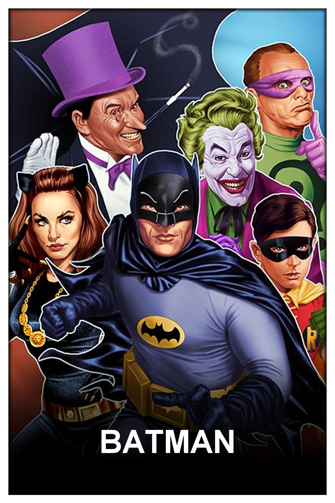
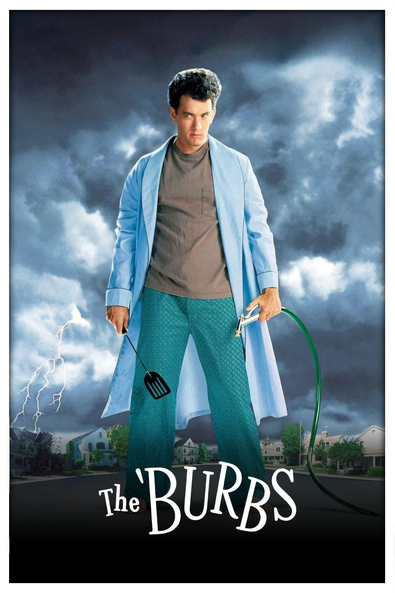
| Priority | Priority info | Content |
|---|---|---|
| -- | LOWEST | Collection of others and their posters (Not necessarily conform to our style guidelines) |
| - | LOW | Homemade posters (Example: foreign/local media) |
| + | MEDIUM | Homemade posters (Can easily be exchanged within the same priority) |
| ++ | HIGH | Drazzilb (MM2K holy grail) / High count general CL2K drives |
| +++ | HIGHEST | Custom folder/drive (Personal)(*) |
❗❗ Remember, it remains a personal preference when using the recommendations posted in the tables on the other tabs. This only serves as a baseline and is by no means the golden rule.
Maintained by dweagle79. This list continues the page originally written and maintained by Chris DC (original).
Special thanks to Chris DC, who created and maintained this page and handed it over, and to all the drive owners and users who provided the feedback that made it useful.
Big thanks to MusikMann2000 and everyone creating posters to the guidelines and rules defined at DAPS.
As of 23/05/2025 there is also a
centralized gdrive repo containing
these drives, which DAPS and DAPS-UI make use of. PosterFlow loads its own copies from
backend/assets/.
Two decisions sit behind a good setup: which poster style you want your library to look like, and what order the drives sit in.
Priority isn't a number you set per drive. It's a single ordered list you build yourself, and the order decides who wins: for any given title, the strongest-placed drive that actually has a poster for it supplies that poster. A drive further down only matters where everything above it came up empty, and nothing is blended - one drive per asset.
In PosterFlow that list lives under Asset Manager → Drive Priority. Drag drives into it and the top of the list is strongest - higher drives override lower ones. MM2K, CL2K and your own custom drives all share the one list, which is what lets the two styles work together.
Subscribing to a drive is not the same as ranking it. A drive has to be in the priority list to be used for matching at all - PosterFlow offers to add it for you when you subscribe.
DAPS works on the same idea, but its list is written in ascending order: lowest priority first.
That's the order the tiers on the DAPS tab are in, and it's why the strongest tier (+++) sits at
the bottom of that table.
If you're setting this up in PosterFlow, read the tiers bottom-up - the
+++ row belongs at the top of your Drive Priority list.
Artwork drives are ranked in their own separate list, and they resolve per asset rather than per item: a title's logo, background and square art can each come from a different drive, whichever is highest-placed for that particular slot.
MM2K and CL2K are listed separately here only because they're two different styles. You can run both together, subscribing to drives from either list and ranking them in whatever order you like, or commit to a single style and ignore the other list entirely. Both are perfectly normal setups.
The difference is how the title is rendered. MM2K sets the title as text; CL2K uses the title's own clear logo on the same template, which is why the two lists otherwise look so similar.
| MM2K | CL2K | |
|---|---|---|
| Title | Set in Arial over a black gradient | The title's own clear logo, 600 - 800 px wide and centered |
| Coverage | Broad. The longest-established list | Broad and still growing as more makers add posters |
| Variants | Several drives carry white-text or no-gradient versions | Original-language titles on Wenisinmood(#2), and more alternatives per title as the list grows |
| Looks best when | You want one uniform treatment across everything | You want more variety, with each title carrying its own branding |
You don't have to pick one. Put your preferred style's drives above the other style's, and the second one becomes a fallback: you get the look you want wherever it's covered, and a matching-template poster instead of nothing everywhere else.
Either style works as your primary now. Ranking the other one below it just means you still get a matching-template poster on anything your first choice hasn't reached yet, and when neither has a title, ask: missing posters can be requested, and makers pick them up. PosterFlow's Requests board is built for exactly that.
Where mixing does hurt is within a set. A collection with logos on three films and Arial text on the other two reads as unfinished in a way that either style used consistently does not. If that bothers you, the custom folder covers it: drop matching posters for the odd ones out and they win regardless of drive order.
Whenever a drive contains > 50% posters collected from others, its priority should be set to lowest.
Chris DC's drive is the canonical example. It contains a few homemade posters and personal favorites, since posters sometimes have slight variations or have been remade by others - at which point it falls into "collection of others".
In the list, because the posters are known to be correctly made, it sits above any other drive in the lowest priority, but below any drive that is > 50% custom made by the owner(s).
For its owner, that drive is their custom folder/drive and personal to them, so they set it to the highest priority - they'd rather see their own posters than someone else's. For everyone else it stays at the lowest priority.
So why follow this baseline at all, and what happens if you change the order of these drives?
You're using this baseline in your configuration, but some titles get a poster you don't like, and you know a better one exists.
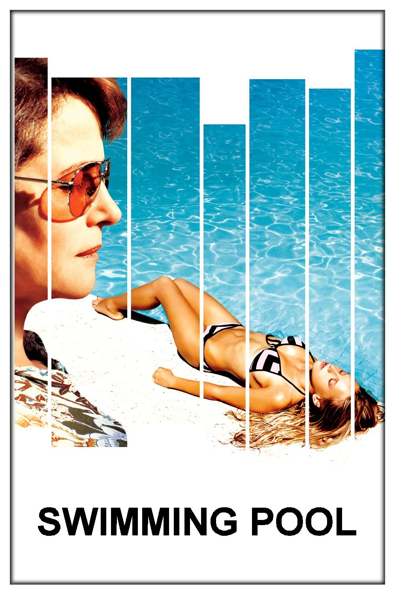
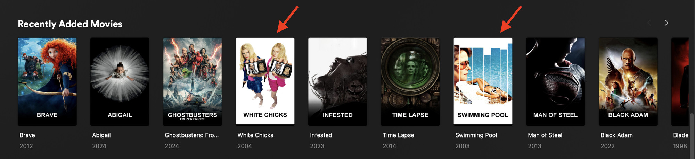
But it's rarely that simple - a higher-priority drive may have posters you personally don't like either.
That's where the custom folder comes in: move the posters you want to win into your custom folder, re-run everything, et voila. Nothing else has to be re-ranked.
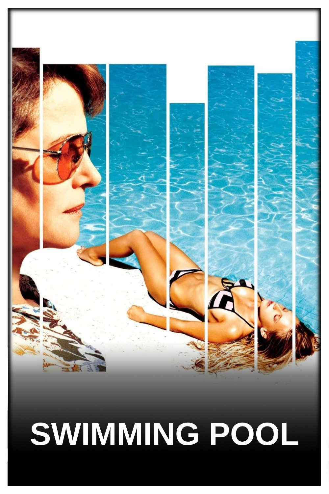
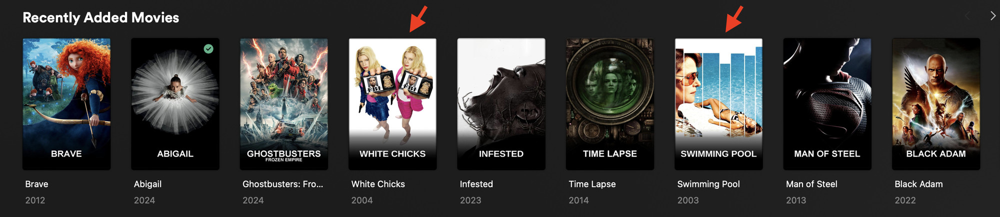
MM2K style posters were orignally created by MusikMann2000.
On any table: click a column heading to sort, or type in the filter box to narrow it. Drive IDs have a copy button.
| Priority | Owner | Drive ID | Content | Artwork | ACK | Owner feedback |
|---|---|---|---|---|---|---|
| -- | Solen(#2) | 1zWY-ORtJkOLcQChV--oHquxW3JCow1zmopen | Collection of others (broad, TV-heavy) | - | ✅ | |
| -- | MajorGiant(#2) | 15sNlcFZmeDox2OQJyGjVxRwtigtd82Ruopen | Collection of others (broad; Hallmark, stand-up) | - | ✅ | |
| -- | Chris DC | 1oBzEOXXrTHGq6sUY_4RMtzMTt4VHyeJpopen | Homemade + collection of others | - | ✅ |
|
| - | Jpalenz77 | 1qBC7p9K4zur5dOCf3F6VTyUROVvHQoSbopen | Homemade (Arthouse, docs, network collections) | - | ✅ | Asked to be ranked lowest priority (of homemade posters) |
| - | WenIsInMood | 1Wz0S18sKOeyBURkJ1uT3RtkEmSsK1-PGopen | Homemade (Chinese & Korean drama, anime) | - | ✅ | |
| - | Darkkazul | 1ejgRXwX6opexs8oAX8CnpSpKQt7Hrf00open | Homemade (Anime, K-drama, docs, reality) | - | ✅ | About 33% are Anime, Korean, Chinese, and Japanese shows/movies |
| - | Reitenth | 1cqDinU27cnHf5sL5rSlfO7o_T6LSxG77open | Homemade (95% Anime) | - | ✅ | |
| - | TheOtherGuy(#2) | 15faKB1cDQAhjTQCvj8MvGUQb0nBORWGCopen | Homemade (OG titles: German) | - | ✅ | MM2K style with black gradient. ALL posters are in German (original release language); international versions are in TheOtherGuy(#1). |
| - | TheOtherGuy(#1) | 1TYVIGKpSwhipLyVQQn_OJHTobM6KaokBopen | Homemade (World cinema + list collections) | - | ✅ | Movie, Series and Collection posters all in MM2K style with black gradient |
| - | Dweagle79 | 1XXZL-TpqWqfbKBWCifN2-MRdGDbSzHTjopen | Homemade (Mainstream + smart collections) | LogosBGSquare | ✅ |
|
| - | MiniMyself | 1Ec0PVQv_AU6S-2q6UE1Eoivfwo0DUnySopen | Homemade (Superhero, horror, sci-fi, anime) | LogosBGSquare | ✅ |
|
| - | Kalyanrajnish | 1Kb1kFZzzKKlq5N_ob8AFxJvStvm9PdiLopen | Homemade (Indian: Hindi, Punjabi, South Indian) | - | ✅ | |
| - | TokenMinal | 1KJlsnMz-z2RAfNxKZp7sYP_U0SD1V6lSopen | Homemade (Mostly Anime, some French media) | LogosBGSquare | ✅ |
|
| - | Tarantula212 | 1LIVG1RbTEd7tTJMbzZr7Zak05XznLFiaopen | Homemade (Mostly Bollywood/Indian media) | Logos | ✅ | |
| - | Dsaq | 1wrSru-46iIN1iqCl2Cjhj5ofdazPgbszopen | Homemade (Mostly Dutch media) | - | ✅ | Dutch media also have Dutch filenaming |
| + | Quafley | 1G77TLQvgs_R7HdMWkMcwHL6vd_96cMp7open | Homemade (Mostly Anime) | - | ❔ | Main focus is around anime (especially older lesser known ones). This includes movies. |
| + | Stupifier | 1bBbK_3JeXCy3ElqTwkFHaNoNxYgqtLugopen | Homemade (Mostly Anime) | - | ✅ | To be placed as low as possible |
| + | Sahara | 1KnwxzwBUQzQyKF1e24q_wlFqcER9xYHMopen | Homemade (Award & best-of collections) | - | ✅ | +1 rank with Stupifier |
| + | MajorGiant(#1) | 1ZfvUgN0qz4lJYkC_iMRjhH-fZ0rDN_Yuopen | Homemade (Recent indie & mainstream film) | - | ✅ | Can contain white text versions of black text MM2K posters |
| + | Lion City Gaming | 1alseEnUBjH6CjXh77b5L4R-ZDGdtOMFropen | Homemade (World cinema, Indian, docs) | - | ✅ | Can contain white text versions of black text MM2K posters |
| + | IamSpartacus(#1) | 19_kDCSHFdeZypxOxmODWmEt6jtBBtOYwopen | Homemade (Mainstream film & TV, reality, docs) | Logos | ✅ |
|
| + | BZ | 1Xg9Huh7THDbmjeanW0KyRbEm6mGn_jm8open | Homemade (Mostly TV: crime & mystery) | Logos | ✅ | Can contain white text versions of black text MM2K posters |
| + | Solen(#1) | 1YEuS1pulJAfhKm4L8U9z5-EMtGl-d2s7open | Homemade (Age ratings, networks, Nordic TV) | - | ✅ | |
| + | Zarox | 1wOhY88zc0wdQU-QQmhm4FzHL9QiCQnpuopen | Homemade (K-drama, US/UK comedy-drama) | - | ✅ |
|
| ++ | Drazzilb | 1fKRkx4Yine5cqkH411FmShdd-wHRMBIFopen | Original MM2K | - | ✅ | |
| +++ | PERSONAL CUSTOM FOLDER/DRIVE | YOU | PERSONAL | - | ✅ | (*) Use this to override/replace posters from one of the drives (or personal/other collections) when you don't want to change priorities for specific reasons. |
Iamspartacus and dweagle79 started creating posters with the original logo on them instead of the title set in Arial. Some others joined the rebellion.
CL2K means "Clear Logo", and "2K" is because the main template is derived from the MM2K-style one.
On any table: click a column heading to sort, or type in the filter box to narrow it. Drive IDs have a copy button.
| Priority | Owner | Drive ID | Content | Artwork | ACK | Owner feedback |
|---|---|---|---|---|---|---|
| - | Mario | 1MiNjT3t_eIdaMTiQ4E89IMNXasco7r6qopen | CL2K Homemade (Horror, comedy, arthouse) | - | ✅ | Logos may fall below the bottom limit. |
| - | Wenisinmood(#2) | 1sGiSVkabE6NtLuQfoKYEwbwosnRGMQAFopen | CL2K Homemade (Original language titles: East Asian) | - | ✅ | Contains original language titles |
| - | Tarantula212 | 1k5oohfM77PgcB5aOZ0ZV8t5GMF-FquTkopen | CL2K Homemade (Mostly Indian media) | Logos | ✅ | |
| + | Chodeus | 18Rv6LBp9YZWpnT2qt5wXELFNXj9GSa2sopen | CL2K Homemade (Mainstream & mid-budget film) | - | ❔ | |
| + | Solen | 1NnKbYnIVnDGkxgKpbgSoWl8JFdbjawOIopen | CL2K Homemade (Holiday TV movies, Swedish TV) | - | ✅ | |
| + | BerserkeR | 1jToV8ee8RhqnG9DhAPYKufEJpb8Ru_7ropen | CL2K Homemade (Mostly horror, world cinema) | - | ✅ | |
| + | Darkkazul | 1X1E8ktIoAXBwuTTImltizEH5_XwBPoz3open | CL2K Homemade (Comedy, indie film, docs, anime) | - | ✅ | |
| + | Confused | 1l-cuRGy1JDpkmDrBWz46yr_xlT1CWNvQopen | CL2K Homemade (Korean & Chinese drama, anime) | - | ✅ | |
| + | Wenisinmood(#1) | 1Jr8oFEyLvSREHac9l1yRyaw2XCd8OXc7open | CL2K Homemade (Anime, East Asian, classics, comedy) | - | ✅ | |
| + | BZ | 1cEIuJRr8AZcthyVWfNn2skxog6R_MPrWopen | CL2K Homemade (Mostly TV: crime & mystery) | Logos | ✅ | |
| + | LionCityGaming | 1gJ_CXigGfZDJV5C3ZTaTz_yycgkROTJFopen | CL2K Homemade (World cinema, Indian, classics) | - | ✅ | |
| + | TokenMinal | 1FyjcjsP5Yb0w3u6QZHbjJ51j5zTT8lA5open | CL2K Homemade (Mostly Anime, some French media) | LogosBGSquare | ✅ | Anime |
| + | Jpalenz77 | 1kLvAjMx3jcJbRKjuMYTrUaA4hR4N8wfhopen | CL2K Homemade (Indie film, prestige TV, docs) | - | ✅ | Only new content as of 28-06-2025 |
| + | füsen | 1DuZrQfUBfmUbnYEg1C0ftrLe8v_FGAUhopen | CL2K Homemade (World cinema, cult, classics) | Logos | ✅ | New drive, not on the original DAPS list yet |
| + | MajorGiant | 1yHWFeml5eynoLuAXnNJ4PttCS_QK8u2Nopen | CL2K Homemade (Mostly mid-budget drama) | - | ✅ | New drive, not on the original DAPS list yet |
| ++ | MiniMyself | 1MNpR2fVRJt6bW5NIBPR43f6GvINcrw_oopen | CL2K Homemade (Anime, horror, superhero, sci-fi) | LogosBGSquare | ✅ | |
| ++ | Bostafari | 1Z-U7hSK723MhynrlHXHW93TVCMKwh8Bjopen | CL2K Homemade (Arthouse, HK action, anime, cult horror) | LogosBGSquare | ✅ | |
| ++ | Iamspartacus | 179QKyeP3avZvC_t4Fvk2Mm1nfRyuKvocopen | CL2K Homemade (Mainstream film & TV, stand-up) | Logos | ✅ | |
| ++ | Dweagle79 | 1R4tDkZVyG7iEbQ4DNbUPiPGfslPkcWmUopen | CL2K Homemade (Broad mainstream film & TV) | LogosBGSquare | ✅ | |
| +++ | PERSONAL CUSTOM FOLDER/DRIVE | YOU | PERSONAL | - | ✅ | (*) Use this to override/replace posters from one of the drives (or personal/other collections) when you don't want to change priorities for specific reasons. |
Artwork drives hold the clear logos, backgrounds and square art used to build
CL2K posters and to dress up Plex/Kometa libraries. They are separate from poster drives: artwork
lives in its own logos/, backgrounds/ and squareart/
subfolders, and it has no MM2K/CL2K style split.
Not every maker publishes all three. The table shows exactly what each drive contains, so you can subscribe to a drive for logos only and skip a type you don't want.
| Type | Folder | Used for |
|---|---|---|
| Logos | logos/ | Clear logos - CL2K poster titles, Plex clear-logo art |
| Backgrounds | backgrounds/ | 16:9 backdrops / fanart |
| Square art | squareart/ | 1:1 art, mostly for music and shorts |
| Owner | Drive ID | Logos | Backgrounds | Square art | Poster drives | ACK |
|---|---|---|---|---|---|---|
| Bostafari | 1zUE6LDrrxPo66ch8voZlgVyG_wi-4V7sopen | ✅ | ✅ | ✅ | CL2K: Bostafari | ❔ |
| BZ | 18jgCydHW8lalrq_vDZAYRGKx6ZHcP1Zpopen | ✅ | - | - | MM2K: BZ · CL2K: BZ | ❔ |
| Dweagle79 | 1IlmtsQ7aJ1RjpaGSskEtgEt9ZNmSyukLopen | ✅ | ✅ | ✅ | MM2K: Dweagle79 · CL2K: Dweagle79 | ✅ |
| füsen | 110Xtee9O414M1xPGxI6DCvkbDw9FNXqOopen | ✅ | - | - | CL2K: füsen | ❔ |
| Iamspartacus | 1BHB1IHQwB5dywv4c4GdpiPkK5fkBcXSEopen | ✅ | - | - | MM2K: IamSpartacus(#1) · CL2K: Iamspartacus | ❔ |
| MiniMyself | 13Fzw1PgZj_MuJGpY7TRChc-3ywM1ENzXopen | ✅ | ✅ | ✅ | MM2K: MiniMyself · CL2K: MiniMyself | ❔ |
| Tarantula212 | 1umW2aPKgZhvH3yzJs2Of-jlLAr1Ax-aVopen | ✅ | - | - | MM2K: Tarantula212 · CL2K: Tarantula212 | ❔ |
| TokenMinal | 18Yr85mO65WpEXMvtM57OXB_umusADWdFopen | ✅ | ✅ | ✅ | MM2K: TokenMinal · CL2K: TokenMinal | ❔ |
In PosterFlow, each artwork drive can be limited to the types you actually want under Drives → Artwork; unselected types are excluded from the rclone transfer entirely.
⚠️ If placed logos keep "becoming" backgrounds, check Kometa's
dimensional_asset_renamesetting - it renames assets by aspect ratio.
Every maker on this page, and which lists they appear on.
| Owner | MM2K | CL2K | Artwork |
|---|---|---|---|
| BerserkeR | - | BerserkeR | - |
| Bostafari | - | Bostafari | LogosBGSquare |
| BZ | BZ | BZ | Logos |
| Chodeus | - | Chodeus | - |
| Chris DC | Chris DC | - | - |
| Confused | - | Confused | - |
| Darkkazul | Darkkazul | Darkkazul | - |
| Drazzilb | Drazzilb | - | - |
| Dsaq | Dsaq | - | - |
| Dweagle79 | Dweagle79 | Dweagle79 | LogosBGSquare |
| Fusen | - | füsen | Logos |
| Iamspartacus | IamSpartacus(#1) | Iamspartacus | Logos |
| Jpalenz77 | Jpalenz77 | Jpalenz77 | - |
| Kalyanrajnish | Kalyanrajnish | - | - |
| LionCityGaming | Lion City Gaming | LionCityGaming | - |
| MajorGiant | MajorGiant(#1), MajorGiant(#2) | MajorGiant | - |
| Mario | - | Mario | - |
| MiniMyself | MiniMyself | MiniMyself | LogosBGSquare |
| Quafley | Quafley | - | - |
| Reitenth | Reitenth | - | - |
| Sahara | Sahara | - | - |
| Solen | Solen(#1), Solen(#2) | Solen | - |
| Stupifier | Stupifier | - | - |
| Tarantula212 | Tarantula212 | Tarantula212 | Logos |
| TheOtherGuy | TheOtherGuy(#1), TheOtherGuy(#2) | - | - |
| TokenMinal | TokenMinal | TokenMinal | LogosBGSquare |
| WenIsInMood | WenIsInMood | Wenisinmood(#1), Wenisinmood(#2) | - |
| Zarox | Zarox | - | - |
Guidance for making your own posters to the community styles, and for getting your drive onto the lists on this page.
Anyone can make posters for the community - every drive on this page started with someone deciding to. Start from the matching template below, follow the style notes for MM2K or CL2K, and collect what you make in a Google Drive folder.
Once you have a drive worth sharing, ask to have it listed. It helps to have ready:
/folders/The folder has to be shared so that anyone with the link can view it - that's how everyone syncs what is in it.
Contact Dweagle79 in the PosterFlow Discord Channel to be added.
New drives are placed using the same community baseline as everything else, so where you land depends on what's in the drive rather than when you joined:
--)- or +You can ask for a particular spot. Several makers have, and those requests are honored. If you'd rather be ranked low so your posters only fill gaps, say so.
Your entry starts at ❔ in the ACK column, meaning nobody has confirmed it with you. Once you've checked your row - the description, the feedback and the ranking - it becomes ✅. See how priority works for what the tiers actually do.
.psd.psdBoth templates ship with PosterFlow, so they're also on disk at
backend/assets/ in the repo.
| Group | What it's for |
|---|---|
BORDER LAYER | The white frame. Locked - leave it alone |
COLLECTION TEXT | plasced at the bottom for Collection posters |
TITLE ADDONS | The small leading "THE" / "A" some makers use |
TITLE TEXT | Six preset title positions. Can be mixed use for varying titles. |
SEASONS | Season posters |
SEQUEL | Sequel numbering, the "number overlay" referred to on the drive list |
LOGO | The logo layer for CL2K |
GRADIENT | The black fade the title sits on |
POSTER | The artwork, placed as a smart object |
The original community style: the title set in Arial over a black gradient at the foot of the artwork, inside a white border. The template below is the shared base - CL2K is the same file with the title swapped for a clear logo.
1000 x 1500POSTER as a smart object, filling the frameTITLE TEXT. MIDDLE BOTTOM is the default;
the others move the title up or down to suit the art(small) variants for long titles that would otherwise crowd the bordercenteredwhite, though some posters use black text - several drives carry
white-text versions of thoseGRADIENT and BORDER LAYER as they areIf you publish variants - no gradient, no sequel number, white text over black - say so in your drive's owner feedback on this page, so people know what they're subscribing to.
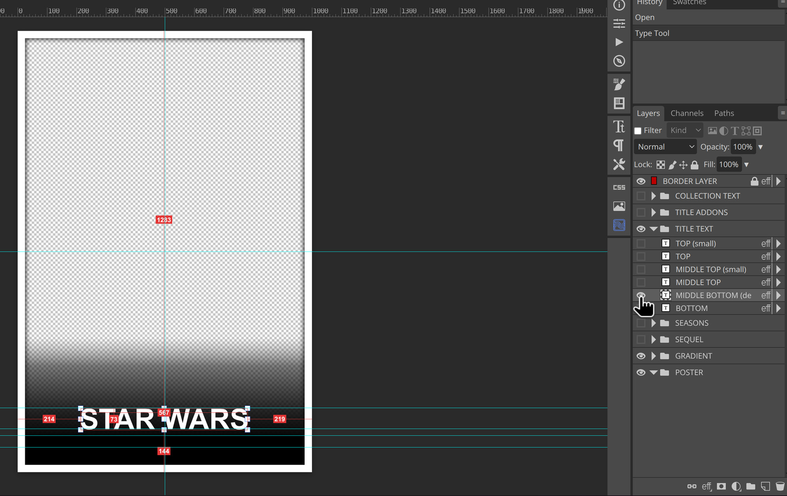
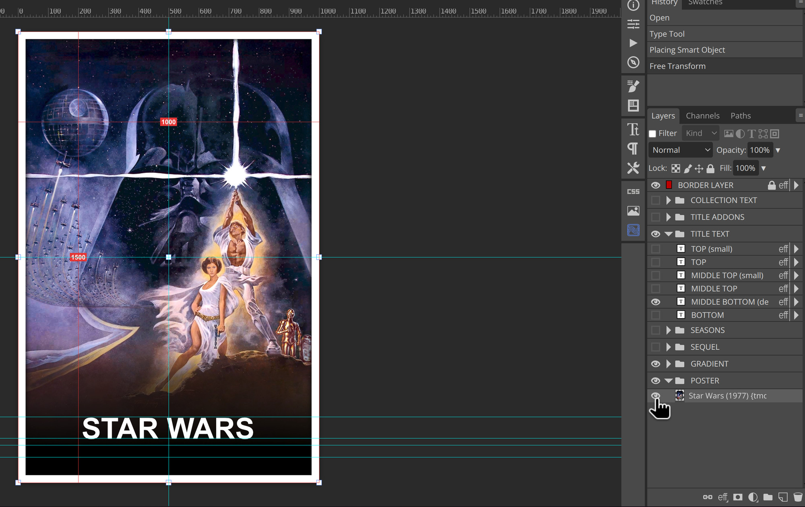
Based on MM2K posters.
When using Ben Dodson's artwork finder, primarily use the SingleColorContentLogo.
When using TMDB, it's in media → logos.
PosterFlow's Maker Tools → Artwork tab can pull logos, backgrounds and square art for a title from TMDB and TheTVDB directly, and crop them to the right size.
placement should be on the correct guidelineWidth of logo should be 600px, but exceptionally can be 800pxLogo should be centeredLogo should be as white as possible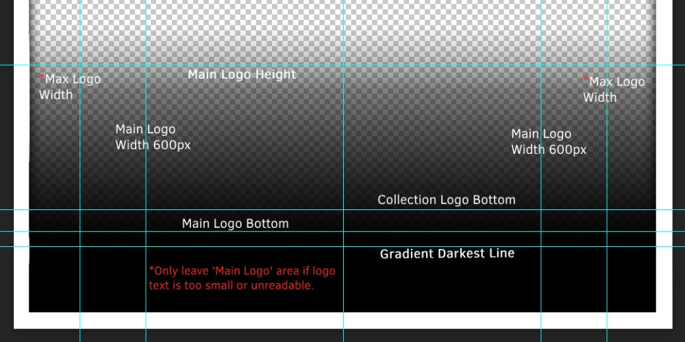
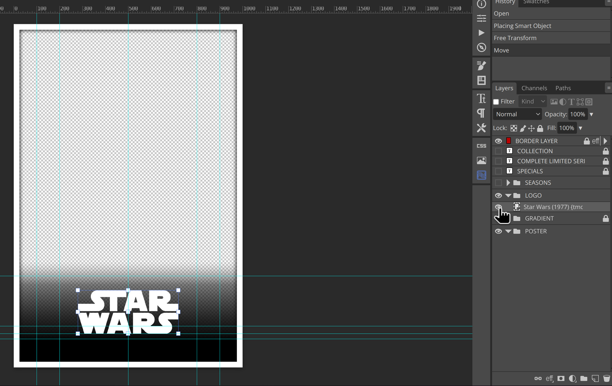
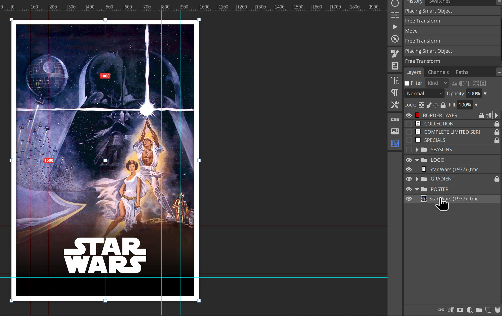